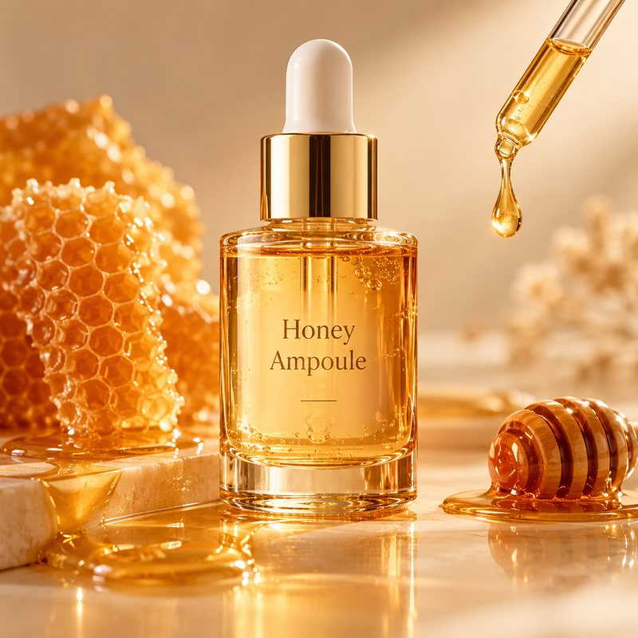
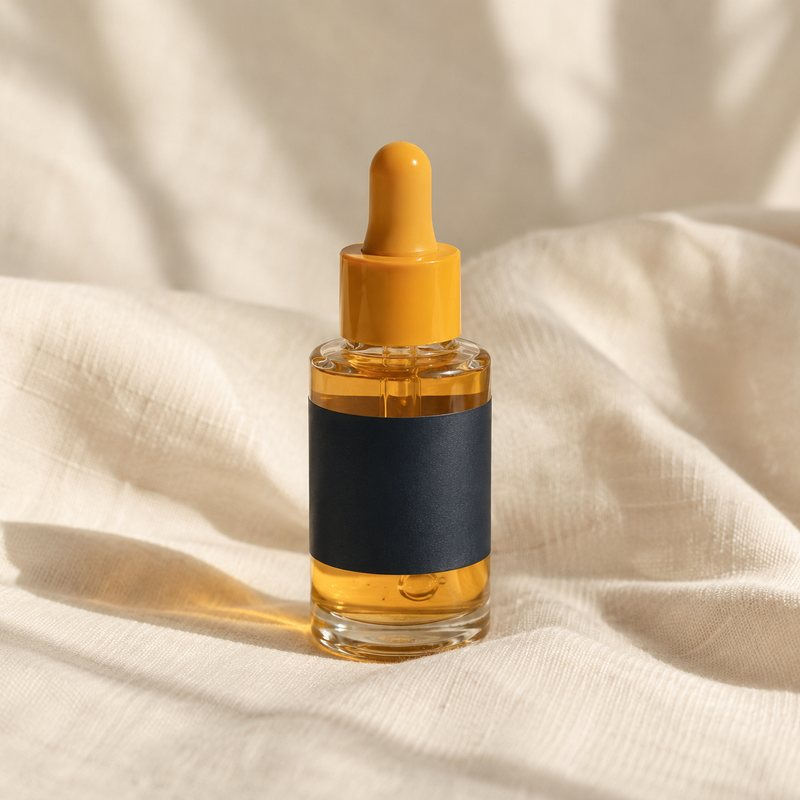
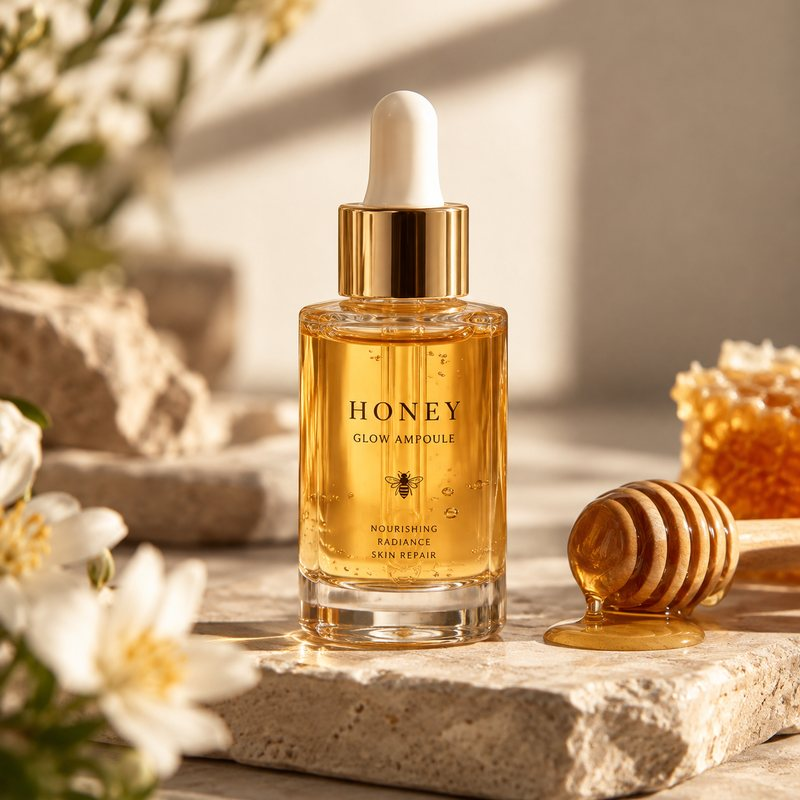
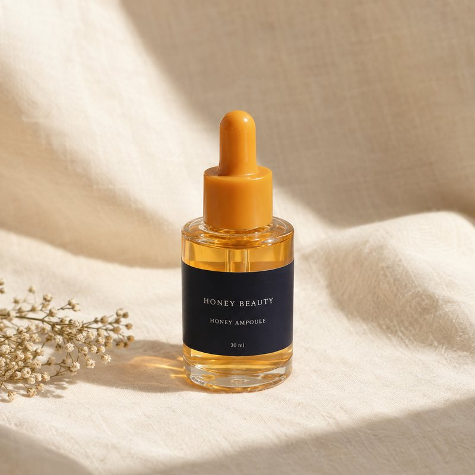
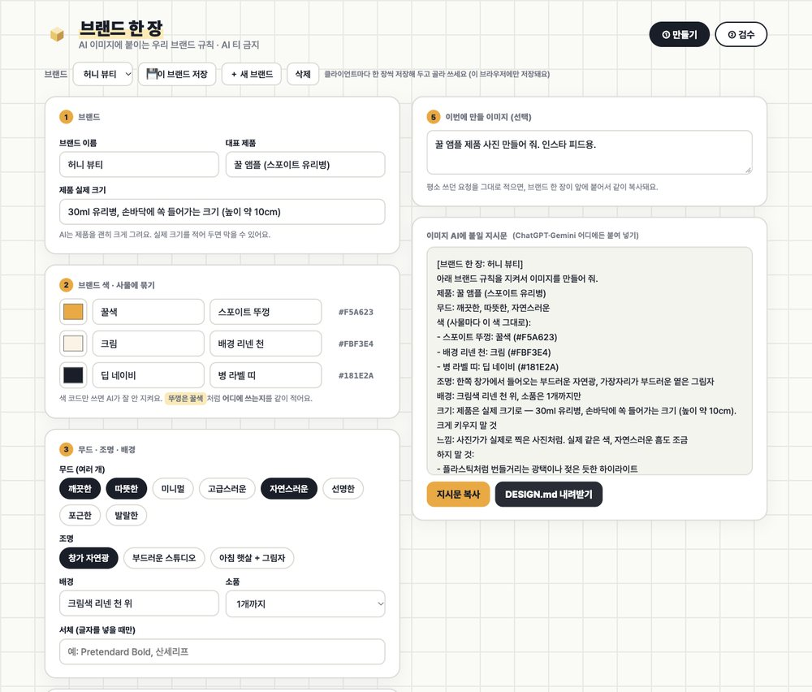
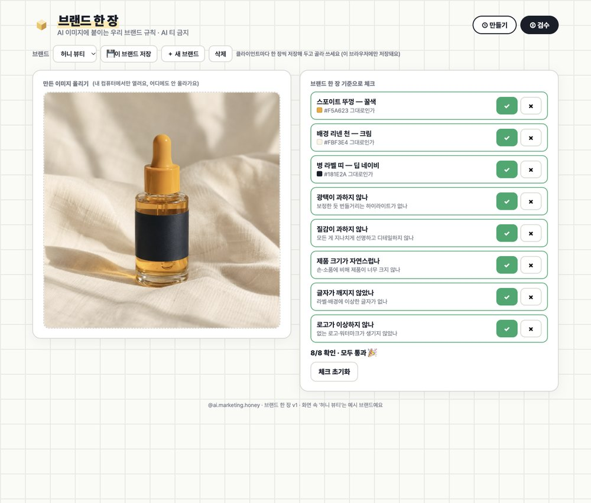

AI 티 나는 광고 이미지
없게 해주세요
해외 개발자들은 AI한테 디자인을 맡길 때, 브랜드 디자인 규칙을 파일 한 장(DESIGN.md)으로 먼저 읽혀요. 이 방식을 광고 이미지에 맞춰 '우리 브랜드 한 장'을 만들고, ChatGPT에 같은 요청으로 실제로 비교해 봤어요.
01실제로 써 본 결과
요청은 둘 다 "꿀 앰플 제품 사진 만들어 줘. 인스타 피드용." 똑같아요. 매번 새 채팅에서, 같은 계정·같은 모델(ChatGPT 이미지)로 두 번씩 만들었어요.




넘겨 보세요 → 요청만(1번째) · 브랜드 한 장(1번째) · 요청만(2번째) · 브랜드 한 장(2번째)
그냥 요청은 두 번 다 금색 뚜껑이었고 장면이 매번 바뀌었어요. 지어낸 라벨 문구도 들어갔어요. 브랜드 한 장을 붙이면 두 번 다 꿀색 뚜껑 · 네이비 라벨 띠 · 크림 리넨 · 창가 그림자가 그대로였어요.
2번째 After에는 라벨에 "HONEY BEAUTY" 글자가 들어갔어요(깨지진 않았어요). 글자가 안 생긴다고 보장할 수는 없어서, 실제 로고와 문구는 생성 뒤에 직접 넣는 걸 추천해요. 두 번 해 본 결과라 매번 같다고 장담할 수는 없어요.
02DESIGN.md가 뭐예요
구글 Stitch가 낸 형식으로, 브랜드의 색 · 서체 · 간격 같은 디자인 규칙을 마크다운 파일 한 장에 적어 두고 AI한테 먼저 읽히는 방식이에요. 나이키 · 애플 · 스타벅스 같은 브랜드의 DESIGN.md를 모아 둔 저장소가 깃허브 스타 약 12만 개예요.
저장소의 파일들은 AI 코딩 툴로 웹 화면을 만들 때 쓰는 용도예요. 이번 편은 같은 방식을 광고 이미지에 맞춰 응용한 거예요. 그래서 이미지에 필요한 칸(조명 · 배경 · 제품 크기 · 하지 말 것)을 더 넣었어요.
남의 브랜드 파일은 형식을 참고하는 데만 쓰세요. 다른 브랜드처럼 보이는 광고를 만드는 데 쓰면 안 돼요.
03우리 브랜드 한 장 만들기
- 양식 받기둘 중 편한 걸로 시작해요. DESIGN.md 예시 파일(허니 뷰티)을 받아 값만 바꾸거나, 브랜드 한 장 양식 툴을 받아 브라우저로 열어요(설치 없음 · 인터넷에 아무것도 올라가지 않아요).
- 칸 채우기브랜드 색 3개는 "뚜껑은 꿀색"처럼 어디에 쓰는지까지 적어요. 조명 · 배경 · 제품 실제 크기 · 하지 말 것을 고르면 지시문이 바로 만들어져요.
- 이미지 AI에 붙이기[지시문 복사] → ChatGPT · Gemini 등에 붙이고, 맨 아래 '이번 요청'에 평소 쓰던 요청을 적어요.
- 검수만든 이미지를 양식 툴의 ② 검수 탭에 올려 ✓/✗. ✗가 있으면 "나머지는 그대로 두고, 아래만 고쳐 줘" 문장이 만들어져요. 그대로 붙여 넣으면 돼요.


대행사라면 클라이언트마다 한 장씩 저장해 두고 골라 쓰면 돼요(양식 툴의 '이 브랜드 저장' · 그 브라우저에만 저장돼요).
04바로 쓰는 프롬프트
첨부한 브랜드 가이드를 읽고, 광고 이미지용 '브랜드 한 장'을 만들어 줘. - 브랜드 색 3개: 이름, 색 코드, 그리고 이미지 속 어떤 물건에 쓰는지(예: 뚜껑, 배경 천, 라벨) - 조명, 배경, 소품 개수, 제품의 실제 크기 - 하지 말 것: 번들거리는 광택, 과한 질감, 제품 과장, 가짜 글자, 없는 로고는 꼭 넣고, 가이드에 있는 금지 사항도 추가 - 가이드에 없는 내용은 지어내지 말고 "확인 필요"라고 적어 줘. - 마지막에 이미지 AI에 그대로 붙일 수 있는 지시문으로 정리해 줘.
[브랜드 한 장: 허니 뷰티] 아래 브랜드 규칙을 지켜서 이미지를 만들어 줘. 제품: 꿀 앰플 (스포이트 유리병) 무드: 깨끗한, 따뜻한, 자연스러운 색 (사물마다 이 색 그대로): - 스포이트 뚜껑: 꿀색 (#F5A623) - 배경 리넨 천: 크림 (#FBF3E4) - 병 라벨 띠: 딥 네이비 (#181E2A) 조명: 한쪽 창가에서 들어오는 부드러운 자연광, 가장자리가 부드러운 옅은 그림자 배경: 크림색 리넨 천 위, 소품은 1개까지만 크기: 제품은 실제 크기로 — 30ml 유리병, 손바닥에 쏙 들어가는 크기 (높이 약 10cm). 크게 키우지 말 것 느낌: 사진가가 실제로 찍은 사진처럼. 실제 같은 색, 자연스러운 흠도 조금 하지 말 것: - 플라스틱처럼 번들거리는 광택이나 젖은 듯한 하이라이트 - 모공·결·물방울 하나하나까지 과하게 선명한 질감 - 실제보다 크게 과장된 제품 - 제품이나 배경에 생기는 가짜 글자·깨진 글자 - 없는 로고·브랜드 마크·워터마크 [이번 요청] 꿀 앰플 제품 사진 만들어 줘. 인스타 피드용.
나머지는 그대로 두고, 아래만 고쳐 줘. 1. 번들거리는 광택을 줄여서, 표면을 실제 사진처럼 무광에 가깝게 자연스럽게 해 줘. 2. 깨진 글자, 가짜 글자는 전부 지우고 라벨은 비워 둬. 진짜 로고와 글자는 나중에 따로 넣을 거야.
💡 색은 코드만 적으면 잘 안 지켜져요. "뚜껑은 꿀색"처럼 물건이랑 같이 적는 게 핵심이에요.
05'AI 티' 세 가지
플라스틱처럼 반짝이는 하이라이트, 젖은 듯한 표면.
모든 결과 물방울이 지나치게 선명해서 오히려 가짜 같아 보여요.
제품·음식이 실제보다 크게 그려져요. 실제 크기를 적어 두면 줄어요.
해외 이미지 툴 Magnific One(2026-10 출시)도 'AI 티'를 이 세 가지로 설명하면서, 브랜드 킷을 먼저 정하고 생성하는 같은 흐름을 제품으로 냈어요.
06써 보기 전에 꼭
- 로고 · 문구는 사람이 직접 넣으세요. AI가 그린 로고와 글자는 틀리거나 깨질 수 있어요.
- 광고 심의 대상 문구(효능 · 수치 등)는 이미지 안에 넣지 말고 따로 검토하세요.
- 회사 브랜드 가이드를 외부 AI에 올리기 전에 보안 정책을 확인하세요.
- 다른 브랜드의 DESIGN.md로 그 브랜드처럼 보이는 광고를 만들지 마세요.
07출처
- VoltAgent/awesome-design-md — 브랜드 DESIGN.md 모음 · MIT · 스타 121,968 (2026-10-18 확인)
- DESIGN.md 개요 (Google Stitch)
- VentureBeat — Magnific One 출시 기사 (2026-10-08)
대행사에서 AI 교육하는 현직 마케터가 직접 써 보고 정리해요.
인스타에서 팔로우